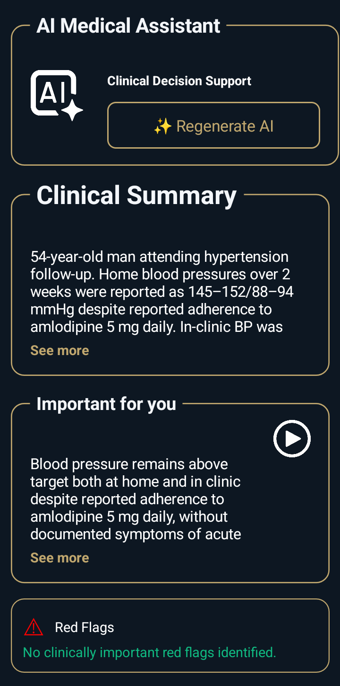

Product guides
Medical AI assistance for reviewing a visit
The MedicalSpace assistant helps a doctor review information recorded for a visit. Its analysis provides considerations to examine alongside the patient’s history and the doctor’s own assessment; it does not make the final clinical decision.
Get it on Google Play

Enlarge screenshotClinical summary
Start with the information in the visit
Check the complaint, history, findings and investigations recorded before interpreting an AI analysis. Missing or inaccurate information can affect its suggestions. The illustrated analysis includes a clinical summary, red flags and differential diagnoses. Read these as considerations for review, not established findings or confirmed diagnoses.
Assess the suggested investigations individually
Another part of the analysis organizes suggestions for investigations and monitoring. Compare them with the consultation and the available evidence. The doctor determines what is appropriate for this patient; an AI-generated suggestion is not a prescription or an automatic instruction to order a test. Verify important points before incorporating them into a clinical decision.
How to use it
- Review the clinical information recorded for the visit.
- Open the AI analysis and read the summary and diagnostic considerations.
- Assess the suggested investigations, verify relevant points and make your own clinical decisions.
Inside the application
Original app captures. Patient records and the clinical chat are fictional examples; private contact details are excluded.
Clinical summary
 Enlarge screenshot
Enlarge screenshotRed flags and differential diagnoses
 Enlarge screenshot
Enlarge screenshotSuggested investigations
Questions about this feature
Does the assistant replace the doctor’s diagnosis?
No. Diagnosis, treatment and clinical decisions remain the responsibility of the treating professional.
What does the captured analysis contain?
A clinical summary, red flags, differential diagnoses and suggested investigations.
Is every suggestion suitable for every patient?
No. Outputs can contain errors or omissions and need clinical review. Feature availability may depend on the plan.